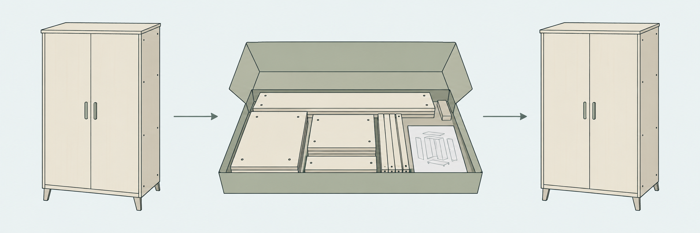
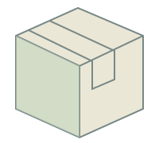
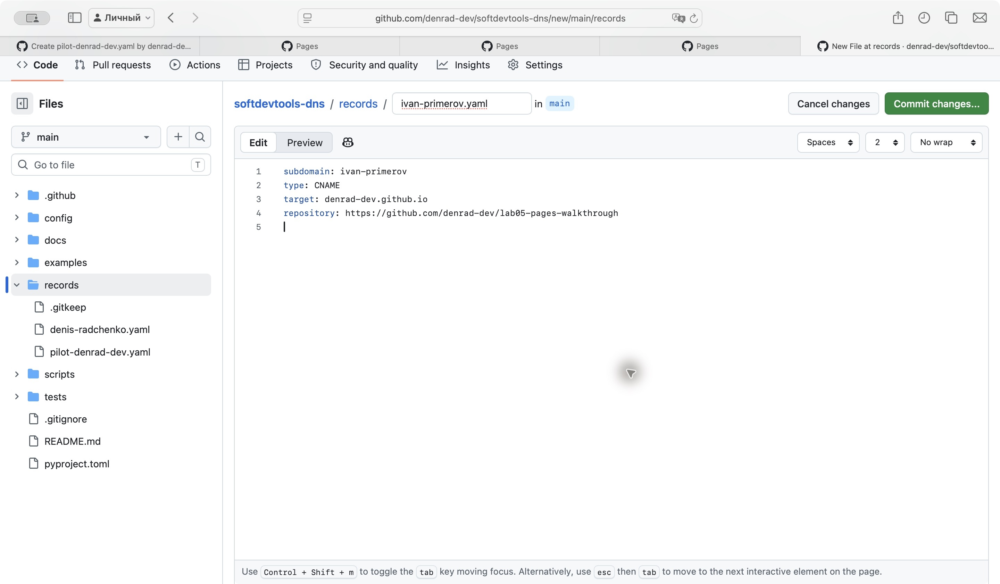

Лекция 10
Форматы
данных
Как сохранить, передать
и правильно прочитать
Обмен · хранение · конфигурация
Один заказ — несколько задач
Те же данные понадобятся разным получателям.
Как записать заказ, чтобы его правильно прочитали?
Как упаковать данные для передачи?

представление для передачиДесериализация
данные у получателя
Получателю нужны данные и правила чтения.
Четыре договорённости
HTTP · протокол
Как отправить запрос
и получить ответ?
JSON · формат
Как записать поля,
значения и вложенность?
UTF-8 · кодировка
Как представить символы
текста байтами?
Схема
Какие поля, типы
и ограничения допустимы?
Файл открылся. Значит ли это, что данные поняты правильно?
Мы придумали свой формат
Номер — 5 знаков. Имя — 20. Масса — 5.
Учебная запись фиксированной длины. Позиции считаем в знаках.
Без описания полей последовательность трудно прочитать.
А теперь добавим телефон
Старая программа продолжает читать по прежним позициям.
Первая версия
номер → имя → масса
Читатель знает порядок
и длину полей.
Новое требование
номер → имя → телефон → массаЧто он прочитает
вместо массы?
Изменение записи требует договориться
о совместимости старого и нового читателя.
Файл переживает свою программу
DBF
Описание структуры внутри файла.
Какие колонки записаны и как их читать?
ZIP64
Расширение существующего формата.
Как поддержать объёмы, которых раньше не ожидали?
Версии
Несколько правил чтения.
Какие старые данные продолжит понимать новая программа?
Формат становится обязательством перед его пользователями.
Что внутри DOCX?
Заказ №125
Получатель: Анна
Товар: книга, 2 шт.

Документ: текст + изображение
example.docx
├── [Content_Types].xml
├── _rels/
└── word/
├── document.xml
└── media/
└── parcel.pngКонтейнер объединяет файлы. Форматы внутри описывают содержимое.
Буквы тоже становятся байтами
Привет
6 букв · 12 байтов в UTF-8
len("Привет") # 6
len("Привет".encode("utf-8")) # 12Те же байты, другое чтение
Привет
UTF-8 ошибочно прочитан
как Windows-1251.
Файл мог сохраниться без повреждений.
При записи и чтении кодировка должна быть согласована.
Бухгалтерии нужна таблица
Договоримся о колонках, разделителе и правилах чтения.
order_id;city;postal_code;amount_rub
125;Москва;001250;1500
126;Чебоксары;428000;2200
CSV — текстовая таблица.
TSV — разделитель табуляция.
Какие сведения нужно передать вместе с файлом?
Куда исчезли нули?
Почтовый индекс состоит из цифр. Нужно ли делать его числом?
В файле
001250
Прочитан как число
1250
Для идентификатора явно сохраняем текстовый тип:
pd.read_csv("orders.csv", sep=";",
dtype={"postal_code": "string"})Автоматическое распознавание типа может изменить данные.
Разделитель встретился внутри адреса
125;001250;"Москва; склад 2"
Сколько здесь полей?
Кавычки позволяют сохранить разделитель внутри одного поля.
В заказе несколько товаров
XML показывает структуру с помощью тегов и вложенности.
<order id="125"> <recipient>Анна</recipient> <items> <item quantity="2"> Книга </item> </items> </order>
Элементrecipient
Атрибутquantity="2"
Вложенность
товар внутри списка
Текст, который рисует картинку
SVG — пример специализированного языка на основе XML.
<svg xmlns="http://www.w3.org/2000/svg"
viewBox="0 0 200 120">
<rect x="30" y="20"
width="140" height="80"
fill="#BDD3BA"
stroke="#1F3433" />
</svg>
Один файл можно прочитать как текст
и показать как изображение.
Знакомый заказ в JSON
{
"id": 125,
"recipient": "Анна",
"items": [
{"title": "Книга", "quantity": 2}
],
"paid": true
}
{ } объект
[ ] массив
"Анна" строка
125 число
true логическое значение
Читаемая структура ещё не гарантирует правильность данных.
Три ошибки — три проверки
{"weight_grams": 1500Объект не закрыт.
{"weight_grams": "1500"}Ожидалось число,
пришла строка.
{"weight_grams": 1.5}Отправитель имел в виду
1,5 кг. Поле — в граммах.
Что обнаружит парсер? Что — схема? Что требует знания задачи?
Что проверяет схема?
{
"type": "object",
"properties": {
"weight_grams": {
"type": "integer",
"minimum": 1
}
},
"required": ["weight_grams"]
}
Целое число
Строка "1500" не подходит.
Не меньше 1
Ноль не подходит.
Обязательное поле
Его нельзя пропустить.
Новое поле: старый клиент выживет?
Первый ответ API
{
"id": 125,
"status": "created"
}После обновления
{
"id": 125,
"status": "created",
"courier_phone": null
}Зависит от правил клиента: допускает ли он новые поля
и сохранился ли смысл прежних?
Совместимость нужно проектировать и проверять.
Вы уже писали YAML
Заявка на поддомен из лабораторной №5.
subdomain: ivan-ivanov type: CNAME target: ivan123.github.io repository: https://github.com/ivan123/my-lab-site
Ключи, значения и автоматическая проверка.
Учебная заявка record.yaml
Человек заполняет поля.
Проверка PR сверяет правила.
Читается легко — ошибиться всё ещё можно
Порт относится к api
services:
api:
image: example/api:latest
ports:
- "8080:8000"Изменили отступ
services:
api:
image: example/api:latest
ports:
- "8080:8000"Справа изменилось дерево: ports больше не внутри api.
Корректный YAML может нарушать правила Docker Compose.
Проверяем синтаксис, правила программы и результат применения.
Почему существуют разные представления?
GZIP / Zstandard
Уменьшить размер уже выбранного представления.
Protobuf
Передавать бинарные сообщения по схеме.
Соблюдать правила её изменения.
Parquet
Хранить таблицу по колонкам
для аналитической обработки.
Выбор зависит от задачи: читаемость, размер, обработка, совместимость.
В одной системе живут разные форматы
Формат зависит от того, кто и для чего использует данные.
shipmentsсохранить заказ{ "id": 125 }вернуть приложению125;Москва;1500выгрузить отчётtype: CNAMEпроверить настройкуОдна система может использовать разные форматы
для разных задач.
Что выберете вы?
Для каждого случая назовите подход и одну важную договорённость.
Ответ мобильному приложению
JSON + контракт API
Поля, типы и условия совместимости.
Таблица для коллеги
CSV или XLSX
Типы, кодировка, правила импорта.
Настройки сервиса
Поддерживаемый формат
YAML / TOML / JSON и проверка правил.
Векторная графика
SVG / XML
Изображение остаётся чётким при масштабировании.
Передать байты мало — нужно согласовать, как их понимать.